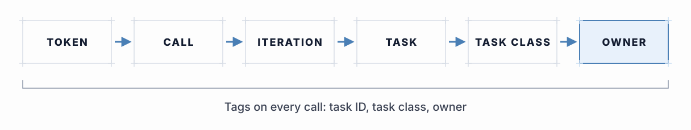
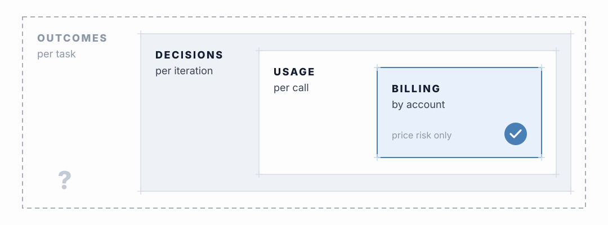
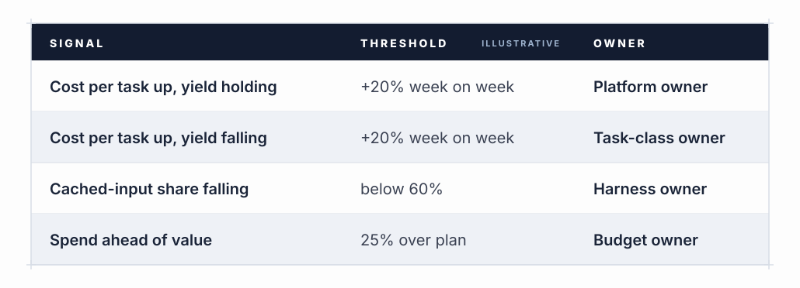
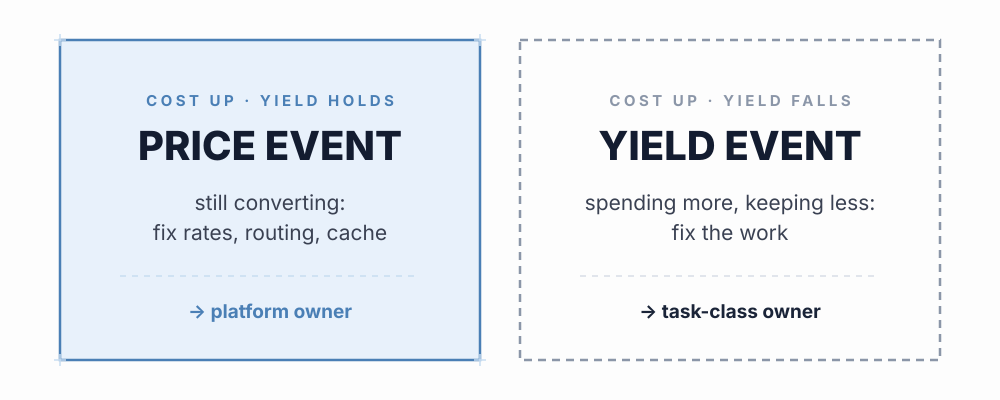

Why the invoice is the wrong starting point
The monthly bill is the most reliable number most teams have, and it is the least useful one for running agentic work. It aggregates by account, model and day. Yield is defined per unit of work: was this task finished, was its output kept, did it matter. Those questions have answers only at the level where a specific run produced a specific result. By the time spend reaches an invoice, the link back to that result has usually been lost.
The fix is not a better invoice. It is attaching ownership to spend at the moment it occurs, so that every token carries enough context to be traced back to the work it served.
The attribution chain
The chain runs from the smallest unit of cost to the person accountable for it. A token is consumed by a call to a model. Calls make up an iteration of the loop. Iterations make up a task. Tasks that recur belong to a task class, and each task class has an owner. If any link is missing, the chain breaks above it: spend you cannot tie to a task cannot be tied to an outcome, and spend you cannot tie to a task class has nobody to act on it.
In practice that means a small set of identifiers travelling with every call: a task ID, a task-class label and an owner. This is ordinary cost-allocation practice, the same tagging discipline cloud teams already apply to infrastructure. The FOCUS specification gives billing data a common shape so that tags like these survive the journey from usage record to cost report. What is particular to agentic work is the grain. Tagging a deployment is not enough when a single deployment serves dozens of task classes with very different yields.

Telemetry in tiers
Not all telemetry is equally easy to collect, and it helps to treat it as nested tiers, each one depending on the one inside it.
- Billing. What was charged, by account and model. Available everywhere, and enough for price risk only.
- Usage per call. Token counts by class (fresh input, cached input, output, tool results), the model tier used and the attribution tags. This is where the token mix from the Reframe page becomes readable.
- Decisions per iteration. Whether each iteration’s output was accepted or rejected, recorded when it happens rather than inferred later. This is what TER counts.
- Outcomes per task. Whether the task finished without a human taking over and whether its output was used downstream. This is where ACR and VGR come from, and it often arrives days or weeks after the spend.
Yield needs the outer tiers. Most teams have only the first. Building outward one tier at a time is a reasonable sequence, as long as the attribution tags are in place from the start, because tags added later cannot be applied to spend that has already happened.

Signals with owners
Attribution is only worth the effort if someone acts on what it shows. Each signal needs a threshold that triggers attention and a named owner who knows the first move. The table below is a starting shape, not a recommended configuration.

When cost per task class spikes, look at yield for the same class over the same period. A cost spike with high yield is a price event: the work is still converting, it just costs more, so look at rates, model routing, token mix and cache behaviour. A cost spike with low yield is a yield event: the loop is spending more and keeping less, so look at rejection reasons, retries, stop rules and the task definition.

The rule matters because the two events have different owners and different fixes. A price event usually belongs to whoever manages the platform and its commercial terms. A yield event belongs to the owner of the task class. Sending a yield event to the platform team produces a cheaper model and a worse result, which is the failure the Reframe page describes. Sending a price event to the task-class owner produces a rewrite of work that was functioning.
Some illustrative rows: cost per task up by more than a set share week on week, with yield flat or rising, goes to the platform owner as a price event. The same cost rise with yield falling goes to the task-class owner as a yield event. A falling share of cached input, on the Reframe page’s reading, suggests the stable prefix is churning and goes to whoever maintains the harness. A falling completion rate means more runs ending in human takeover and goes back to the task-class owner to check scope. Spend running ahead of the plan’s value milestones is the situation μ is designed to flag, and goes to the budget owner.
Claim status. None of these thresholds has been fitted to outcome data. The rule itself follows from keeping price risk and yield risk separate. The numbers that would make it fire at the right moment are still to be measured.
Sources
- 1FinOps Foundation, FinOps Framework (allocation capability) – finops.org/framework
- 2FinOps Open Cost and Usage Specification (FOCUS) – focus.finops.org